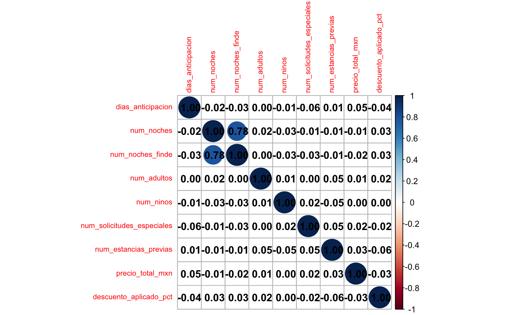
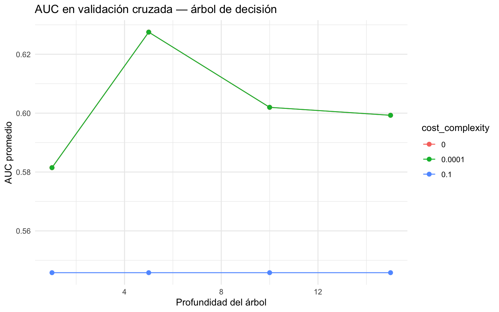
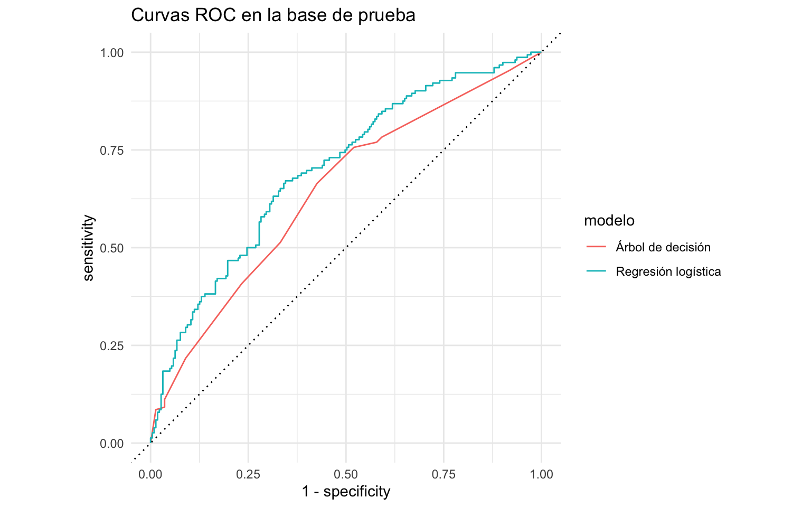
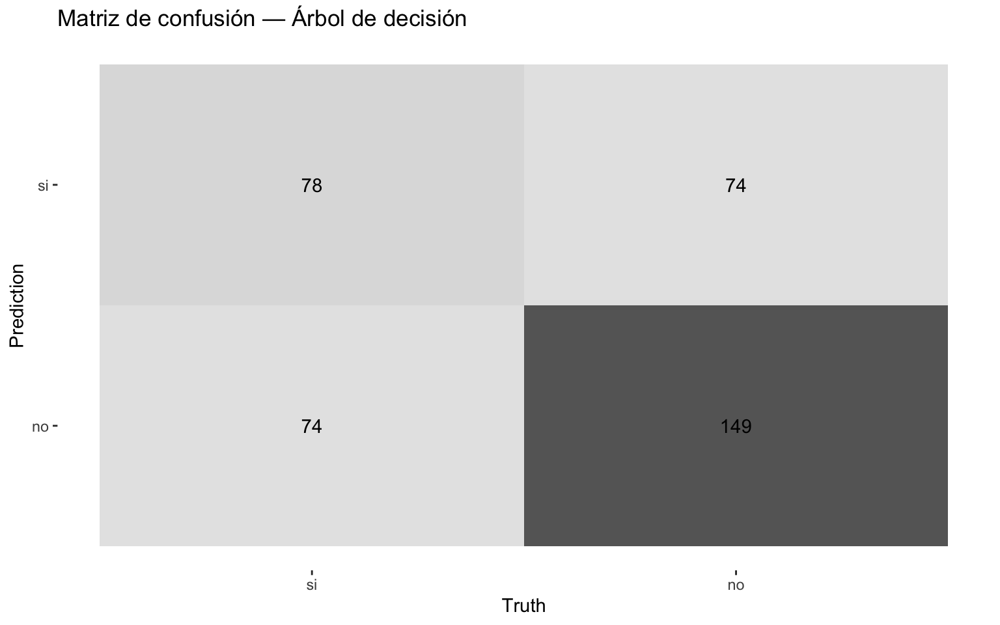
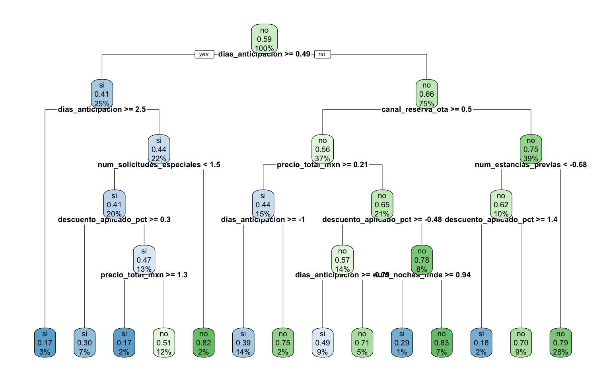

options(scipen = 999)Clasificación: cancelación de reservas hoteleras
EJERCICIO DE CLASIFICACIÓN — Regresión logística vs. árbol de decisión
Objetivo. Predecir si una reserva de hotel se cancelará (cancelo: si/no) a partir de las características de la reserva y del cliente. Compararemos dos clasificadores sobre el mismo flujo: una regresión logística (lineal e interpretable vía coeficientes) y un árbol de decisión (que aprende reglas legibles del tipo “si la anticipación supera X días y el canal es OTA, entonces…”). El dataset tiene muchas variables categóricas, así que la receta usará dummies; además, pais_origen trae faltantes que imputaremos por la moda. Recorremos el flujo completo: partición, receta, workflow(), validación cruzada, tuning y evaluación honesta con last_fit(), y cerramos con una recomendación clara.
1. Cargar librerías
Cargamos todo al inicio. rpart es el motor que parsnip usa por detrás para el árbol de decisión; rpart.plot dibuja el diagrama del árbol entrenado, y corrplot la matriz de correlación.
library(tidyverse)
library(tidymodels)
library(corrplot)
library(rpart)
library(rpart.plot)tidymodels::tidymodels_prefer()2. Cargar los datos
Removemos id_reserva (identificador, no predictor) y convertimos la objetivo a factor. Fijamos "si" como primer nivel: yardstick toma el primer nivel como el evento de interés, de modo que sensibilidad, AUC y demás métricas se calculen sobre “canceló = si”, que es justo lo que el hotel quiere anticipar.
# Removemos id_reserva (identificador). Convertimos la objetivo a factor con
# "si" (canceló) como PRIMER nivel = evento de interés.
reservas <- read_csv("reservas_hotel.csv") %>%
select(-id_reserva) %>%
mutate(cancelo = factor(cancelo, levels = c("si", "no")))glimpse(reservas)Rows: 1,500
Columns: 18
$ dias_anticipacion <dbl> 103, 75, 48, 33, 123, 78, 47, 110, 32, 75, …
$ num_noches <dbl> 2, 4, 2, 4, 6, 9, 1, 2, 4, 2, 5, 3, 2, 1, 1…
$ num_noches_finde <dbl> 1, 2, 1, 2, 2, 1, 0, 0, 1, 1, 2, 0, 1, 0, 0…
$ num_adultos <dbl> 3, 1, 1, 2, 3, 2, 1, 2, 1, 1, 2, 2, 2, 1, 2…
$ num_ninos <dbl> 1, 0, 0, 0, 0, 1, 0, 0, 0, 0, 2, 0, 0, 2, 0…
$ num_solicitudes_especiales <dbl> 2, 0, 0, 0, 1, 2, 2, 0, 0, 2, 0, 0, 0, 0, 0…
$ num_estancias_previas <dbl> 2, 1, 1, 0, 1, 2, 0, 5, 1, 1, 1, 2, 2, 0, 0…
$ precio_total_mxn <dbl> 22426, 17112, 21188, 15251, 16123, 22339, 9…
$ descuento_aplicado_pct <dbl> 0.4, 9.9, 1.2, 6.8, 5.0, 0.0, 30.7, 0.0, 4.…
$ tipo_habitacion <chr> "estandar", "estandar", "junior", "estandar…
$ canal_reserva <chr> "agencia", "ota", "ota", "agencia", "ota", …
$ regimen <chr> "desayuno", "todo_incluido", "media_pension…
$ temporada <chr> "media", "alta", "baja", "baja", "alta", "m…
$ forma_pago <chr> "deposito_50pct", "en_hotel", "en_hotel", "…
$ pais_origen <chr> "europa", "mexico", "mexico", "mexico", "me…
$ cliente_recurrente <chr> "si", "si", "si", "no", "si", "si", "no", "…
$ tiene_promocion <chr> "si", "si", "si", "si", "si", "no", "si", "…
$ cancelo <fct> no, si, no, si, si, no, no, no, no, no, no,…3. Explorar los datos
Tres revisiones mínimas antes de modelar: el balance de clases, los datos faltantes y la colinealidad entre numéricas.
El balance importa porque, si una clase fuera muy rara, el accuracy dejaría de ser confiable (predecir siempre la mayoría daría un accuracy alto pero inútil). Aquí veremos que está razonablemente balanceado, así que el AUC será nuestra métrica de decisión.
reservas %>%
group_by(cancelo) %>%
count() %>%
ungroup() %>%
mutate(porcentaje = 100 * (n / sum(n)))| cancelo | n | porcentaje |
|---|---|---|
| si | 608 | 40.53333 |
| no | 892 | 59.46667 |
Contamos los NA: esto guía la imputación. Esperamos faltantes en pais_origen (variable categórica), que imputaremos por la moda.
reservas %>%
summarise(across(everything(), ~ sum(is.na(.)))) %>%
pivot_longer(everything(), names_to = "variable", values_to = "n_na") %>%
arrange(desc(n_na))| variable | n_na |
|---|---|
| descuento_aplicado_pct | 75 |
| precio_total_mxn | 60 |
| pais_origen | 45 |
| dias_anticipacion | 0 |
| num_noches | 0 |
| num_noches_finde | 0 |
| num_adultos | 0 |
| num_ninos | 0 |
| num_solicitudes_especiales | 0 |
| num_estancias_previas | 0 |
| tipo_habitacion | 0 |
| canal_reserva | 0 |
| regimen | 0 |
| temporada | 0 |
| forma_pago | 0 |
| cliente_recurrente | 0 |
| tiene_promocion | 0 |
| cancelo | 0 |
La matriz de correlación revela colinealidad entre las variables numéricas (por ejemplo, número de noches y monto total suelen ir de la mano). Filtraremos las redundantes con step_corr() para que la logística no se confunda con información duplicada.
matriz_correlacion <- reservas %>%
select(where(is.numeric)) %>%
drop_na() %>%
cor() %>%
round(2)
matriz_correlacion %>%
corrplot(method = "circle", addCoef.col = "black", tl.cex = 0.7)
4. Partición entrenamiento / prueba (estratificada)
Separamos 75% para entrenamiento y 25% para prueba. Estratificamos por cancelo para que ambas particiones conserven la misma proporción de clases. La prueba se reserva para el final.
set.seed(2026)
reservas_split <- initial_split(reservas, prop = 0.75, strata = cancelo)
reservas_entrenamiento <- reservas_split %>% training()
reservas_prueba <- reservas_split %>% testing()table(reservas_entrenamiento$cancelo) %>% prop.table()
si no
0.4053333 0.5946667 table(reservas_prueba$cancelo) %>% prop.table()
si no
0.4053333 0.5946667 5. Receta de preprocesamiento (compartida por ambos modelos)
Usamos una sola receta para que ambos modelos vean la misma representación de los datos. El paso clave aquí es step_dummy, porque hay muchas variables categóricas que la regresión logística (y rpart en este flujo) necesitan en formato numérico.
¿Qué es una receta y por qué importa el orden de los pasos?
Una receta (recipe) encadena pasos de preprocesamiento (step_*) que se aprenden solo con el entrenamiento y se aplican igual a la prueba (esto evita fuga de información). El orden importa: se imputan los NA primero (los pasos siguientes no los toleran), se filtra colinealidad y se normaliza antes de crear dummies, y step_zv queda al final como red de seguridad.
Como pais_origen (categórica) tiene faltantes, los imputamos por la moda (step_impute_mode), la categoría más frecuente. Los numéricos faltantes se imputan por la mediana.
# Receta única comparable:
# 1. Imputar numéricos (mediana) y nominales (moda; pais_origen tiene NAs).
# 2. step_nzv: quitar casi-constantes.
# 3. step_corr: filtrar colinealidad numérica.
# 4. step_normalize: estandarizar numéricos (inocuo para el árbol, ordena la
# escala para la logística).
# 5. step_dummy: codificar las muchas categóricas (tipo_habitacion, canal,
# regimen, temporada, forma_pago, pais_origen, etc.).
# 6. step_zv: por seguridad.
receta_reservas <- recipe(cancelo ~ ., data = reservas_entrenamiento) %>%
step_impute_median(all_numeric_predictors()) %>%
step_impute_mode(all_nominal_predictors()) %>%
step_nzv(all_predictors()) %>%
step_corr(all_numeric_predictors(), threshold = 0.85) %>%
step_normalize(all_numeric_predictors()) %>%
step_dummy(all_nominal_predictors()) %>%
step_zv(all_predictors())Verificamos cómo queda la base ya preprocesada: cada categoría se convirtió en una o varias columnas dummy (0/1).
receta_reservas %>%
prep(training = reservas_entrenamiento) %>%
bake(new_data = NULL) %>%
glimpse()Rows: 1,125
Columns: 28
$ dias_anticipacion <dbl> -0.45769848, 0.15154324, -0.47800654, 0.801…
$ num_noches <dbl> -0.68208290, 1.75392746, -1.03008438, -0.68…
$ num_noches_finde <dbl> -0.2631065, -0.2631065, -1.0630926, -1.0630…
$ num_adultos <dbl> -1.22959792, -0.02568351, -1.22959792, -0.0…
$ num_ninos <dbl> -0.5871544, 0.7472874, -0.5871544, -0.58715…
$ num_solicitudes_especiales <dbl> -0.6969154, 1.0590304, 1.0590304, -0.696915…
$ num_estancias_previas <dbl> -0.2180468, 0.7006898, -1.1367835, 3.456899…
$ precio_total_mxn <dbl> 0.86089954, 1.01452760, -0.64308044, 1.3028…
$ descuento_aplicado_pct <dbl> -0.9369235, -1.0822280, 2.6351457, -1.08222…
$ cancelo <fct> no, no, no, no, no, no, no, no, no, no, no,…
$ tipo_habitacion_estandar <dbl> 0, 1, 1, 0, 0, 1, 1, 0, 1, 0, 1, 1, 0, 1, 0…
$ tipo_habitacion_junior <dbl> 1, 0, 0, 1, 1, 0, 0, 0, 0, 1, 0, 0, 0, 0, 0…
$ tipo_habitacion_suite <dbl> 0, 0, 0, 0, 0, 0, 0, 1, 0, 0, 0, 0, 1, 0, 0…
$ canal_reserva_ota <dbl> 1, 0, 0, 0, 0, 1, 0, 1, 0, 1, 0, 0, 1, 0, 1…
$ canal_reserva_telefono <dbl> 0, 1, 0, 0, 0, 0, 1, 0, 0, 0, 0, 1, 0, 0, 0…
$ canal_reserva_web_propio <dbl> 0, 0, 1, 0, 1, 0, 0, 0, 1, 0, 0, 0, 0, 0, 0…
$ regimen_media_pension <dbl> 1, 0, 1, 0, 0, 0, 0, 1, 0, 0, 0, 1, 0, 1, 0…
$ regimen_solo_habitacion <dbl> 0, 0, 0, 0, 1, 1, 1, 0, 1, 1, 0, 0, 1, 0, 1…
$ regimen_todo_incluido <dbl> 0, 0, 0, 0, 0, 0, 0, 0, 0, 0, 1, 0, 0, 0, 0…
$ temporada_baja <dbl> 1, 0, 0, 1, 0, 0, 0, 1, 1, 0, 0, 0, 0, 0, 1…
$ temporada_media <dbl> 0, 1, 0, 0, 1, 0, 1, 0, 0, 0, 1, 1, 0, 1, 0…
$ forma_pago_deposito_50pct <dbl> 0, 0, 0, 1, 0, 0, 0, 0, 0, 0, 1, 1, 1, 1, 0…
$ forma_pago_en_hotel <dbl> 1, 1, 0, 0, 1, 1, 0, 0, 0, 1, 0, 0, 0, 0, 0…
$ pais_origen_europa <dbl> 0, 0, 0, 0, 0, 0, 0, 1, 0, 0, 0, 0, 0, 0, 0…
$ pais_origen_mexico <dbl> 1, 1, 1, 0, 1, 1, 0, 0, 1, 1, 1, 1, 0, 1, 1…
$ pais_origen_otro <dbl> 0, 0, 0, 1, 0, 0, 0, 0, 0, 0, 0, 0, 0, 0, 0…
$ cliente_recurrente_si <dbl> 1, 1, 0, 1, 1, 1, 1, 1, 0, 1, 1, 0, 1, 1, 0…
$ tiene_promocion_si <dbl> 1, 0, 1, 0, 1, 1, 1, 0, 0, 1, 1, 0, 0, 1, 0…6. Especificación de los modelos
El primer modelo es la regresión logística: no tiene hiperparámetros que ajustar. Modela el log-odds de cancelación como combinación lineal de los predictores.
modelo_logistico <- logistic_reg() %>%
set_engine("glm") %>%
set_mode("classification")El segundo es un árbol de decisión, donde ajustaremos la poda y la profundidad.
¿Qué es un árbol de decisión?
Un árbol parte el espacio de predictores con reglas tipo “si X > umbral, entonces…”, y predice la clase mayoritaria de cada hoja. Capta no linealidades e interacciones de forma automática, y su gran ventaja es que es interpretable: el diagrama resultante son reglas legibles. La desventaja es que un solo árbol es inestable (cambia mucho con pequeños cambios en los datos); por eso se ajustan cost_complexity (poda: castiga árboles grandes) y tree_depth (profundidad máxima) para regularizarlo.
# Árbol de decisión (rpart). Tuneamos cost_complexity (poda) y tree_depth.
modelo_arbol <- decision_tree(
cost_complexity = tune(),
tree_depth = tune()
) %>%
set_engine("rpart") %>%
set_mode("classification")Empaquetamos cada modelo con la misma receta en su workflow.
¿Qué es un workflow?
Un workflow empaqueta en un solo objeto la receta de preprocesamiento y el modelo. Al hacer fit() aplica internamente prep + bake + fit, y al predict() repite el mismo preprocesamiento sobre los datos nuevos. Es la pieza estándar para validación cruzada y tuning.
workflow_logistico <- workflow() %>%
add_recipe(receta_reservas) %>%
add_model(modelo_logistico)
workflow_arbol <- workflow() %>%
add_recipe(receta_reservas) %>%
add_model(modelo_arbol)7. Validación cruzada y tuning de hiperparámetros
¿Qué es la validación cruzada (k-fold)?
Partimos el entrenamiento en v partes (folds) del mismo tamaño. En cada ronda entrenamos con v − 1 folds y validamos en el restante, rotando cuál se deja fuera; luego promediamos el desempeño. Así estimamos qué tan bien generaliza el modelo usando solo el entrenamiento, y reservamos la prueba para el final.
set.seed(2026)
folds_cv <- vfold_cv(reservas_entrenamiento, v = 5, strata = cancelo)Definimos las métricas de clasificación. El AUC será la métrica principal de comparación.
Matriz de confusión, sensibilidad, especificidad, ROC y AUC
- Matriz de confusión: tabla que cruza la clase real con la predicha (verdaderos/falsos positivos y negativos).
- Sensibilidad (recall): de los positivos reales, cuántos detecta el modelo.
- Especificidad: de los negativos reales, cuántos clasifica bien.
- Curva ROC: traza sensibilidad vs. (1 − especificidad) variando el umbral de decisión.
- AUC: área bajo la curva ROC; resume la discriminación (0.5 = azar, 1 = perfecto) sin depender de un umbral fijo. Es la métrica principal cuando las clases están balanceadas.
metricas_clasificacion <- metric_set(roc_auc, accuracy, sensitivity,
yardstick::spec)La logística no se tunea: estimamos su desempeño en CV con fit_resamples().
fit_resamples() vs. tune_grid()
Cuando un modelo no tiene hiperparámetros que ajustar (la regresión logística), fit_resamples() solo lo evalúa en cada fold. Cuando sí los tiene (el árbol, con cost_complexity y tree_depth), tune_grid() prueba varias combinaciones de hiperparámetros en la validación cruzada y nos deja elegir la mejor.
set.seed(2026)
cv_logistico <- workflow_logistico %>%
fit_resamples(resamples = folds_cv, metrics = metricas_clasificacion)
collect_metrics(cv_logistico)| .metric | .estimator | mean | n | std_err | .config |
|---|---|---|---|---|---|
| accuracy | binary | 0.6800093 | 5 | 0.0079668 | pre0_mod0_post0 |
| roc_auc | binary | 0.7243481 | 5 | 0.0121876 | pre0_mod0_post0 |
| sensitivity | binary | 0.5284998 | 5 | 0.0115711 | pre0_mod0_post0 |
| spec | binary | 0.7832791 | 5 | 0.0126229 | pre0_mod0_post0 |
Para el árbol definimos una grilla que combina valores de cost_complexity y tree_depth, y corremos la validación cruzada en cada combinación.
grilla_arbol <- grid_regular(cost_complexity(),
tree_depth(),
levels = 4)set.seed(2026)
tuning_arbol <- workflow_arbol %>%
tune_grid(resamples = folds_cv,
grid = grilla_arbol,
metrics = metricas_clasificacion)La gráfica muestra el AUC promedio en validación cruzada según la profundidad del árbol, con una línea por cada nivel de cost_complexity. Nos ayuda a ver qué tan profundo conviene crecer el árbol antes de que empiece a sobreajustar.
tuning_arbol %>%
collect_metrics() %>%
filter(.metric == "roc_auc") %>%
ggplot(aes(x = tree_depth, y = mean,
color = factor(round(cost_complexity, 5)))) +
geom_line() +
geom_point(size = 2) +
labs(title = "AUC en validación cruzada — árbol de decisión",
x = "Profundidad del árbol", y = "AUC promedio",
color = "cost_complexity") +
theme_minimal()
Seleccionamos la combinación de hiperparámetros con mayor AUC.
mejor_arbol <- tuning_arbol %>% select_best(metric = "roc_auc")
mejor_arbol| cost_complexity | tree_depth | .config |
|---|---|---|
| 0 | 5 | pre0_mod02_post0 |
8. Implementar el workflow final de cada modelo
La logística ya está lista; al árbol le inyectamos los hiperparámetros ganadores con finalize_workflow().
workflow_arbol_final <- workflow_arbol %>%
finalize_workflow(mejor_arbol)9. Entrenar y evaluar con last_fit() sobre la prueba
¿Qué hace last_fit()?
last_fit() toma el split original, reentrena el modelo final sobre TODO el entrenamiento y lo evalúa una sola vez sobre la base de prueba reservada. Es el paso que da la estimación honesta del desempeño en datos que el modelo nunca vio.
ajuste_logistico <- workflow_logistico %>%
last_fit(split = reservas_split, metrics = metricas_clasificacion)
ajuste_arbol <- workflow_arbol_final %>%
last_fit(split = reservas_split, metrics = metricas_clasificacion)10. Pruebas del modelo: métricas y comparación
Reunimos las métricas de ambos modelos en la prueba en una sola tabla, ordenada por AUC.
metricas_comparacion <- bind_rows(
collect_metrics(ajuste_logistico) %>% mutate(modelo = "Regresión logística"),
collect_metrics(ajuste_arbol) %>% mutate(modelo = "Árbol de decisión")
) %>%
select(modelo, .metric, .estimate) %>%
pivot_wider(names_from = .metric, values_from = .estimate) %>%
arrange(desc(roc_auc))
metricas_comparacion| modelo | accuracy | sensitivity | spec | roc_auc |
|---|---|---|---|---|
| Regresión logística | 0.6426667 | 0.5000000 | 0.7399103 | 0.6991680 |
| Árbol de decisión | 0.6053333 | 0.5131579 | 0.6681614 | 0.6421407 |
Las curvas ROC sobrepuestas comparan visualmente la discriminación: entre más se acerque una curva a la esquina superior izquierda, mejor separa las reservas que se cancelan de las que no.
preds_logistico <- collect_predictions(ajuste_logistico) %>%
mutate(modelo = "Regresión logística")
preds_arbol <- collect_predictions(ajuste_arbol) %>%
mutate(modelo = "Árbol de decisión")
preds_ambos <- bind_rows(preds_logistico, preds_arbol)preds_ambos %>%
group_by(modelo) %>%
roc_curve(truth = cancelo, .pred_si) %>%
autoplot() +
labs(title = "Curvas ROC en la base de prueba") +
theme_minimal()
Las matrices de confusión muestran en qué se equivoca cada modelo (falsos positivos vs. falsos negativos), información que el AUC resume pero no detalla. Para el hotel, un falso negativo (no anticipar una cancelación real) y un falso positivo (alertar una cancelación que no ocurre) tienen costos distintos.
conf_mat(preds_logistico, truth = cancelo, estimate = .pred_class) %>%
autoplot(type = "heatmap") +
labs(title = "Matriz de confusión — Regresión logística")conf_mat(preds_arbol, truth = cancelo, estimate = .pred_class) %>%
autoplot(type = "heatmap") +
labs(title = "Matriz de confusión — Árbol de decisión")
La gran ventaja del árbol es su interpretabilidad: el diagrama siguiente muestra las reglas que aprendió. Cada nodo es una pregunta sobre una variable; siguiendo las ramas hasta una hoja se obtiene la predicción. Estas reglas legibles son muy fáciles de comunicar a un área operativa (“las reservas con mucha anticipación por canal OTA y sin depósito tienden a cancelarse”), algo que la logística, basada en coeficientes, comunica con menos transparencia.
# Ventaja del árbol: es interpretable. Visualizamos las reglas aprendidas.
ajuste_arbol %>%
extract_fit_engine() %>%
rpart.plot::rpart.plot(roundint = FALSE, cex = 0.6)
Veredicto: ¿cuál es el mejor modelo?
Como las clases están razonablemente balanceadas, decidimos por el AUC en la base de prueba (mayor es mejor). Ordenamos la tabla y calculamos la diferencia de AUC entre el ganador y el segundo lugar.
tabla_final <- metricas_comparacion %>%
mutate(across(where(is.numeric), ~ round(., 3))) %>%
arrange(desc(roc_auc))
ganador <- tabla_final %>% slice(1)
perdedor <- tabla_final %>% slice(2)
dif_auc <- round(ganador$roc_auc - perdedor$roc_auc, 3)tabla_final| modelo | accuracy | sensitivity | spec | roc_auc |
|---|---|---|---|---|
| Regresión logística | 0.643 | 0.500 | 0.740 | 0.699 |
| Árbol de decisión | 0.605 | 0.513 | 0.668 | 0.642 |
Modelo recomendado: Regresión logística. Obtiene el mayor AUC en la base de prueba (0.699), frente a 0.642 del otro modelo (diferencia de 0.057).
La ventaja de Regresión logística es clara (0.057 de AUC), por lo que es la elección recomendada para este problema.
Como las clases están casi balanceadas, el accuracy también es informativo aquí; en problemas desbalanceados habría que mirar recall y precision en su lugar. Y aunque el AUC favorezca a uno u otro modelo, el árbol conserva una ventaja cualitativa: su diagrama de reglas facilita explicar y operar la política de retención o sobreventa.